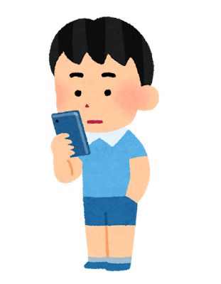
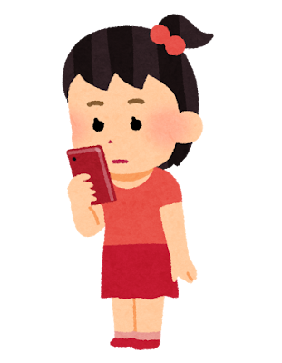
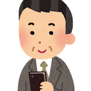
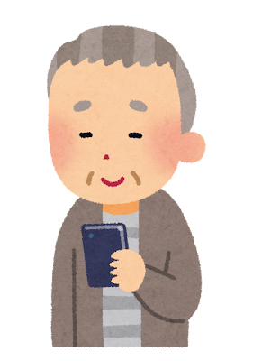
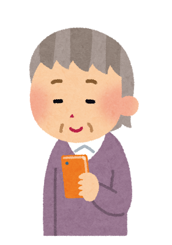
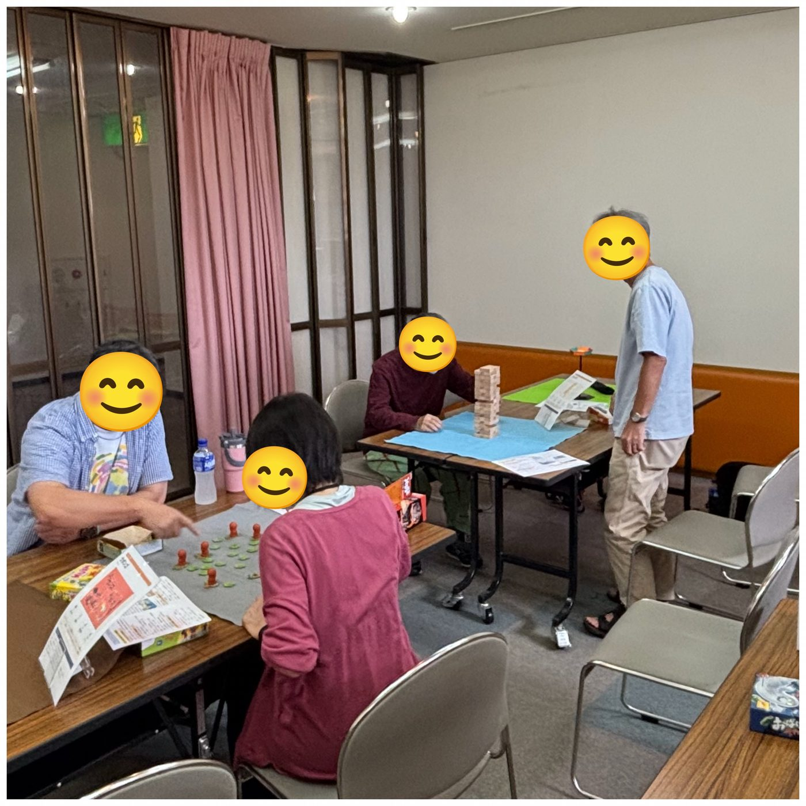
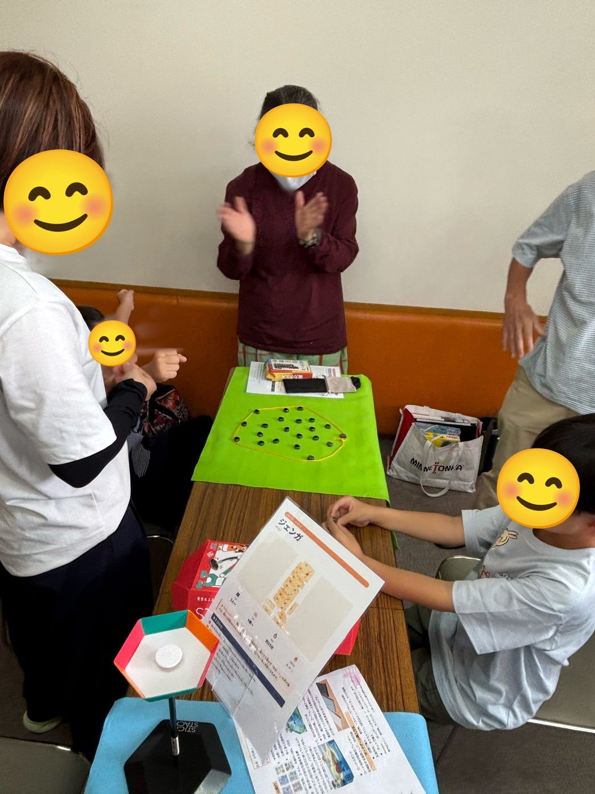
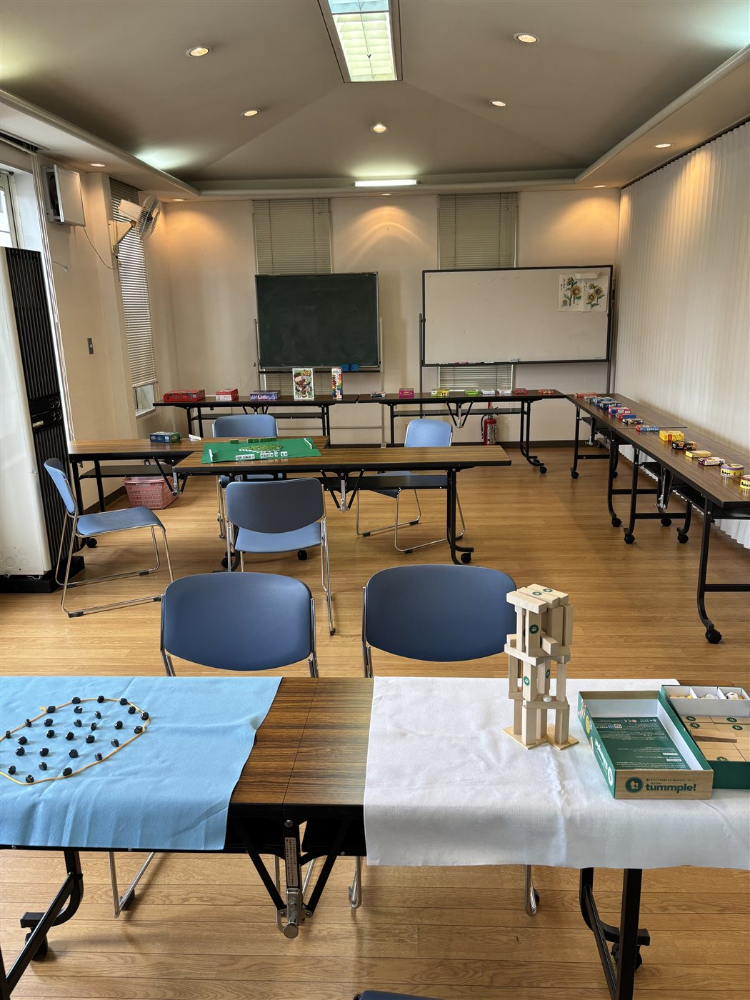

ボードゲームを持って、地蔵盆・こども会の集まりに伺います。
ルール説明から進行まで、すべてお任せください。
初回は無料でお試しいただけます。
受付時間：9:00〜20:00 ／ 木津川市・加茂エリア中心に対応





共通の「言語」がないから、同じ会場にいても世代は分断されがち。
地蔵盆やこども会が、もっと世代を超えて盛り上がる時間になったら――。
ボードゲームは、年齢も立場も関係なく、同じテーブルで対等に笑い合える数少ない遊びです。
ルールを覚えれば、おじいちゃんも子どもも、初対面同士も、みんな対等。
脳を使いながら誰かと笑い合う時間に。定期的に行う高齢者は認知症発症リスクが低いという研究報告もあります。
勝ち負け・交渉・ルールの中でのやりとりを通じて、非認知能力（交渉力・コミュニケーション力）が育ちます。
知識やAIに代替されない「人と目を見て関わる力」。AI時代に一番大事な力を、遊びながら自然に育みます。


2026年7月26日の体験会。60代の方から5歳のお子さんまで、同じテーブルを囲みました。
「夏休みボードゲーム涼み処」での実際の様子です。
お近くの自治会・こども会の集まりでも、同じような時間をお届けします。

初回は無料でお試しいただけます（1自治会・こども会1回限り）。「続けたい」「今年もお願いしたい」と思っていただけたら、2回目からは下記料金でご案内します。
※人数が多いほど、お一人あたりの負担はさらに小さくなります
初回は無料でお試しいただけます。「地蔵盆の出し物として頼める？」「こども会の何人くらいから頼める？」など、どんな質問でもどうぞ。
📞 090-5656-3539 メールで相談受付時間：9:00〜20:00 ／ 木津川市・加茂エリア中心に対応（遠方はご相談）